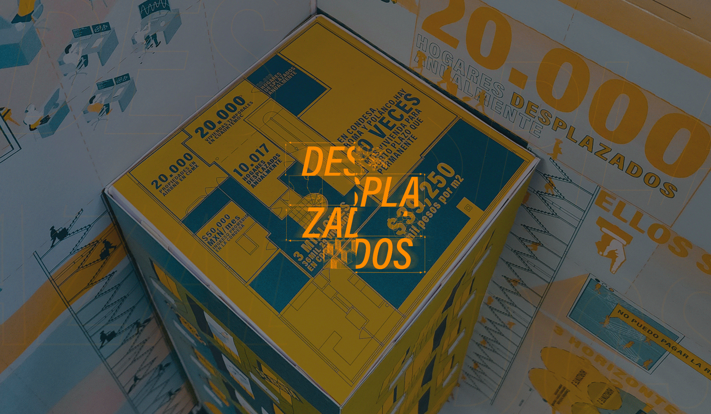
Diseño de Información y Visualización de Datos
Desplazados
Sobre el proyecto
Una infografía expandida
Un tótem informativo de 2.40 metros y cuatro caras que funciona como infografía expandida, analizando las causas, efectos y agentes del proceso de gentrificación y desplazamiento urbano.
Infografía expandida
El tótem y sus contenidos
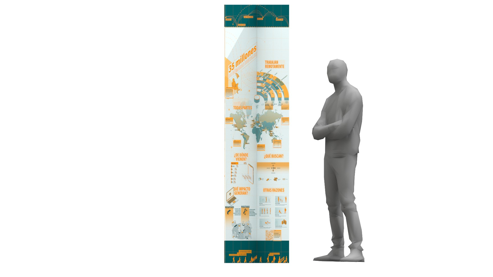
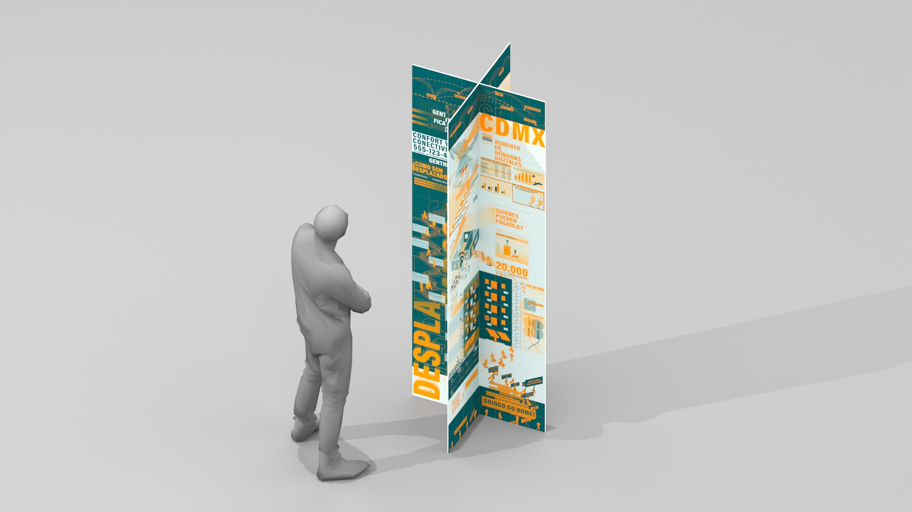
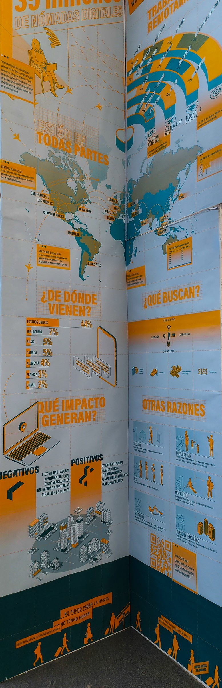
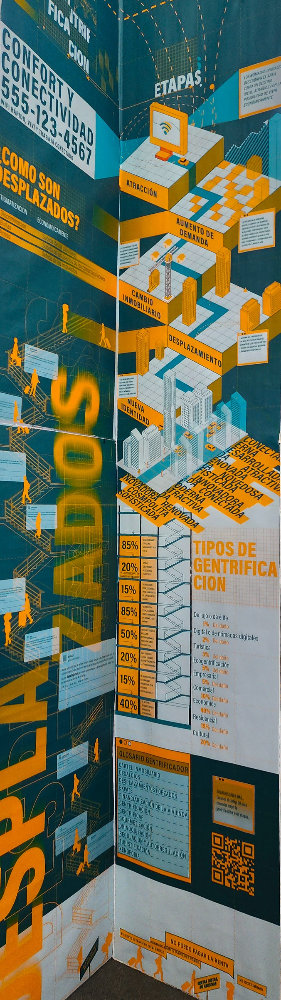
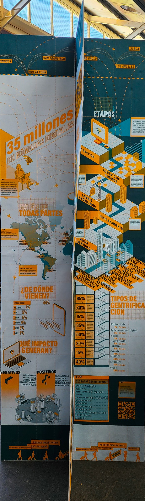
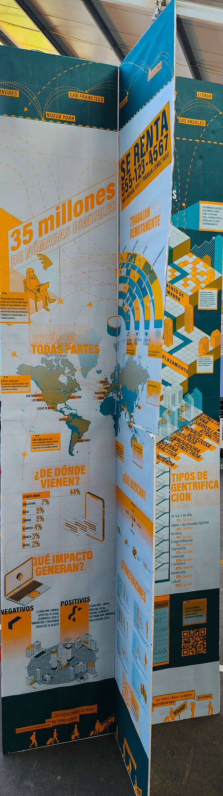
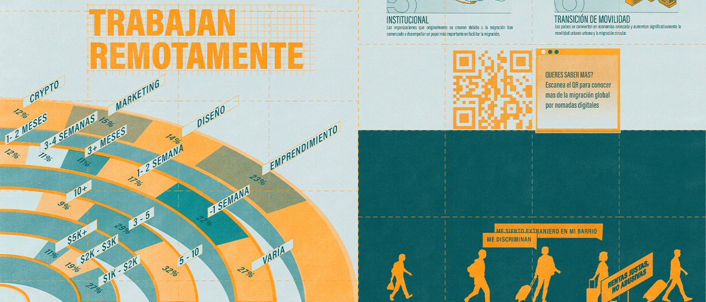
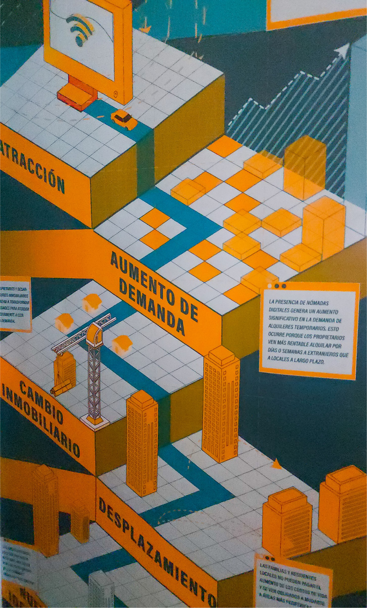
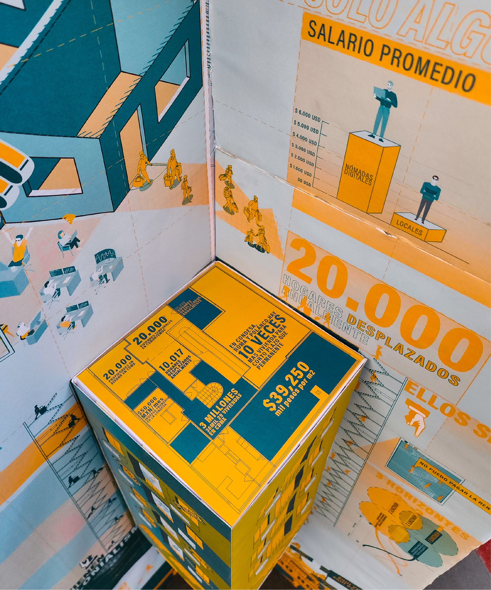
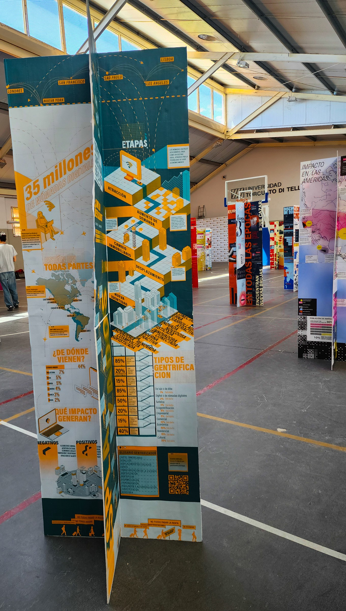
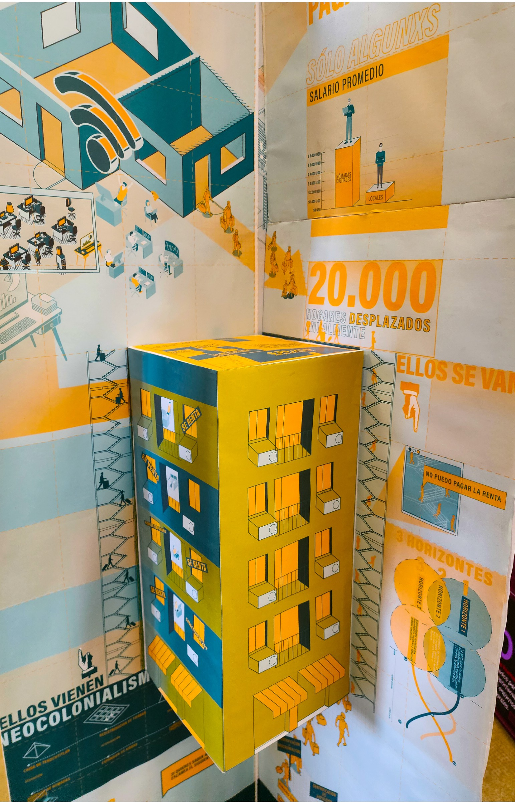
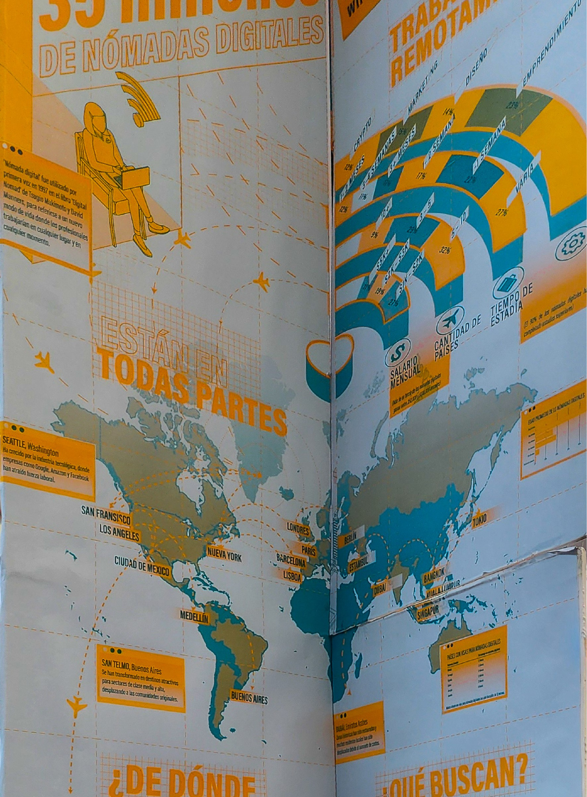
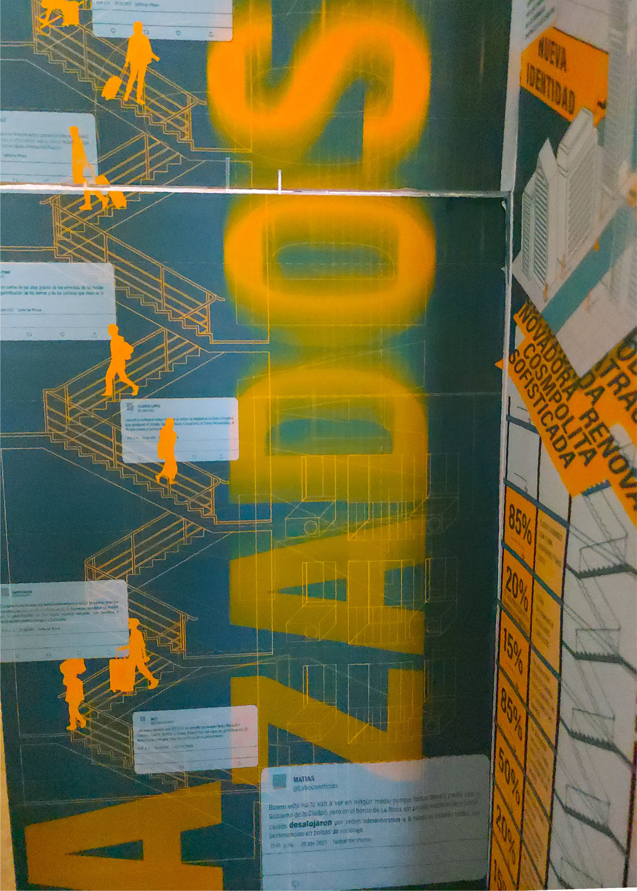
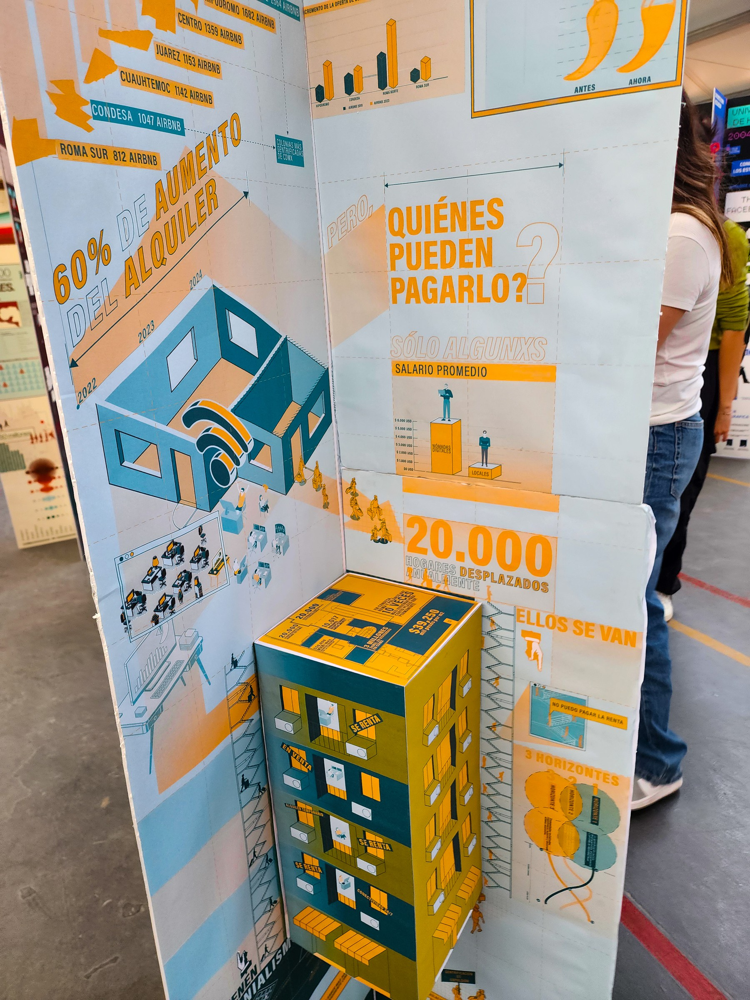